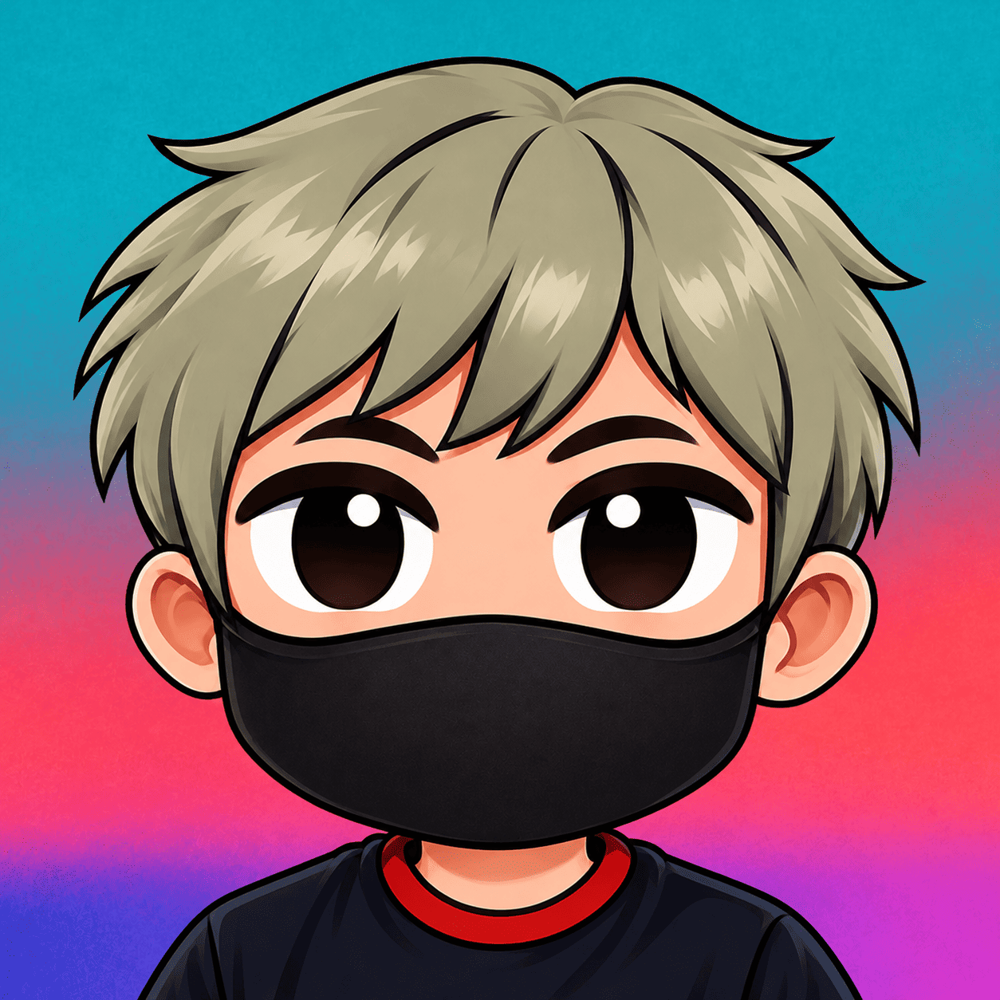

▶YOUTUBE / 01
PRÓXIMAMENTE
TUS VÍDEOS APARECERÁN AQUÍ
Añade los ID de tus vídeos en config.js.
GAMING · STREAMING · COMMUNITY
Directos, gameplays y momentos épicos. Sígueme en tus plataformas favoritas y forma parte de la comunidad ヨギ.

NO TE PIERDAS LA ACCIÓN
Elige dónde quieres verme jugar.
El reproductor de tu canal aparecerá aquí.
ÚLTIMOS GAMEPLAYS Y MOMENTOS
Añade los ID de tus vídeos en config.js.
Todo el contenido en un solo lugar.
Revive los momentos más épicos.
MERCHANDISING OFICIAL
Artículos exclusivos para la comunidad.
Tazas, llaveros, ropa y accesorios con diseños de la comunidad.
Pronto encontrarás aquí el merchandising oficial de ヨギ.
Los pedidos tienen un plazo estimado de entrega de 5 a 7 días laborables dentro de Japón.
THE GAME IS BETTER WHEN PLAYED WITH OTHERS
Follow me on social media and join the community ヨギ.